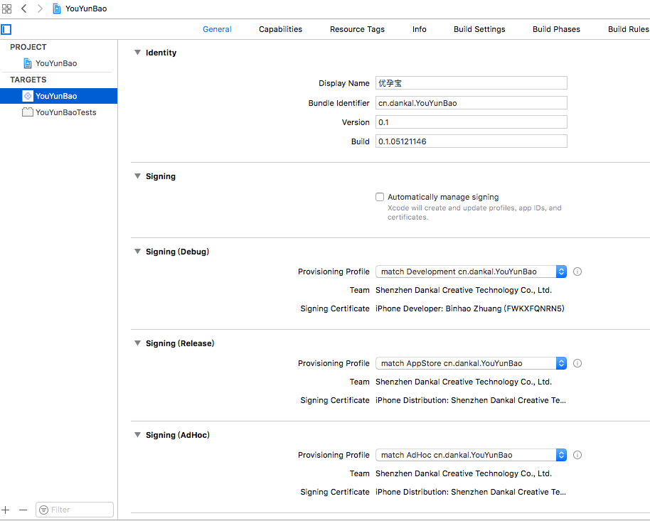

前言
我相信大家都 revoke 过证书，虽然这只是一个梗，但是 iOS 开发最麻烦的就是证书。开发人员随意在苹果开发者平台删除配置文件，或者新建配置文件，而其他的同事却无法被通知到，证书失效，打出来的包莫名其妙就闪退了，会导致大量无谓的工作量。 match comes to rescue。
match 提出了一套全新的管理证书和配置文件的方案，用来进行签名，思想是使用私有仓库来管理证书和配置文件，每一台机器通过拉取该仓库来安装证书和配置文件，再也不用去开发者平台手动创建了。
match
match 是 fastlane 的一个功能组件, 采取了集中化方式来管理证书和 profile, 新建一个私有远程 git 库用来保存证书和 profile, 一个 team 的开发者共用同一套证书, 方便了管理和配置, 同时 match 在证书过期时还会自动从苹果官网下载新的证书并 push 到私有的 git 库中, 保证证书同步。
安装
|
|
初始化
|
|
命令执行后，需要输入新建的用来保存证书的 git 仓库地址, 运行成功后会在 fastlane 文件夹下面生成一个 Matchfile。
|
|
Tips: 这里推荐使用 SSH 的协议地址，在 Coding 等平台的私有项目中配置好 SSH 公钥，以后就可以免密码登录托管平台。另外，如果持续构建使用了 Jenkins，如果不改成 SSH 协议的话可能会导致构建一直卡在 clone 仓库这一步。（总之，用 SSH 协议地址就对了。）
删除旧证书和 profile
如果当前项目的证书和 profile 比较混乱, 可以用以下两个命令来清空 Apple 官网上当前全部证书和 profile 文件。
|
|
生成证书和 profile
|
|
三条命令对应（真机调试、内测、上架）三个渠道包所需的证书和 profile。
命令运行时需要输入 Apple ID 和 密码, 该密码保存在系统的 keychain 中。
团队管理
项目配置
在项目 PROJECT -> Info -> Configurations 中，点击 + 按钮，Duplicate “Release” Configurations，添加一个 AdHoc。

安装证书
如果 Team 加入了新成员, 在 clone 项目工程后，运行下面的命令, match 就会从私有证书库中下载 develop 证书和 profile, 并安装到新成员的 Mac 上。
|
|
选择证书
在项目 TARGETS -> General 中，Signing 取消勾选 Automatically manage signing，然后选择对应的 profile。
| NAME | Provisioning Profile |
|---|---|
| Signing(Debug) | match Development cn.dankal.xxx |
| Signing(Release) | match AppStore cn.dankal.xxx |
| Signing(AdHoc) | match AdHoc cn.dankal.xxx |

补坑
运行 match appstore 时遇到 openssl 库版本问题。
|
|
解决办法：更新 mac 自带的 openssl 版本。
参考
《A new approach to code signing》
后话
以后每个项目的证书和 Profile 都使用 match 来统一管理，但每个项目不可能都建一个私有仓库来管理证书和 Profile。后面会使用一个仓库，多条分支的方式来管理多个项目。